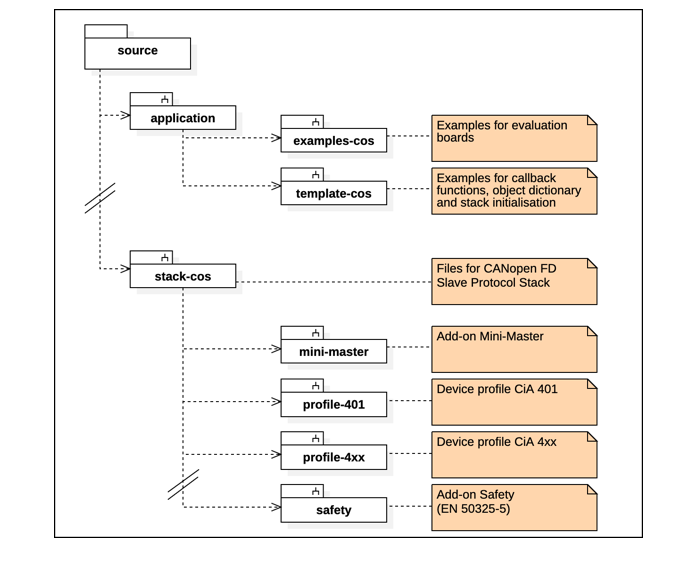

|
CANopen Slave Protocol Stack
Version 7.04.00
|
|
CANopen Slave Protocol Stack
Version 7.04.00
|
The functionality of the CANopen Slave protocol stack can by extended by a number of add-on modules. The source files of these optional add-on modules are located within the source/stack-cos/ directory as shown in the following figure.

Configuration of each individual add-on module is done via the cos_conf.h file.
| Component | Directory | Description |
| CANopen Device Profile CiA 401 | stack-cos/profile-401 | Device profile for generic I/O modules |
| CANopen Device Profile CiA 404 | stack-cos/profile-404 | Device profile for measuring devices and closed-loop controllers |
| CANopen Device Profile CiA 406 | stack-cos/profile-406 | Device profile for encoders |
| CANopen Device Profile CiA 410 | stack-cos/profile-410 | Device profile for inclinometers |
| CANopen Safety | stack-cos/safety | Add-on Safety for CANopen Slave protocol stack |